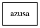
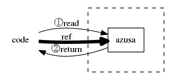
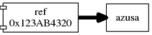
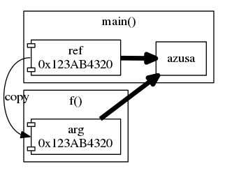
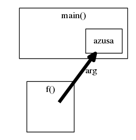

「参照の値渡し」とはどういうことか
割と簡単な話なのに言語によって微妙に意味が違ったりして、ハマる人が割といるっぽいのでまとめてみる。
ここでは、タイトルの通り「参照の値渡し」と「参照渡し」の違いについて説明する。 参照を使うとどんなうれしいことがあるか、といった話題には触れない。
参照とは
変数に「アクセスできる」という状態を形にしたもの。 CやC++におけるポインタみたいなものを一般化したものと考えるとよい（ポインタも参照の一種だが、C++では「参照」というとポインタを使わない参照を示すのでめんどい）。
変数がある。

これを「参照」するとこういうものができる。
この矢印が「参照」である。 アクセスは以下のように、普通の変数と同じようになる。

ここで、矢印の ref は、プログラム上では変数に見えたり、もっと複雑なものに見えたりするが、とにかく変数へのアクセスを媒介するものである。
ref に対して何かしらの操作を加えると、実際には変数に対する操作になる。
ref が物理的に何であるかは「参照」概念を考える上では特に関係ない。
実際には言語や環境によって単に変数と呼ばれていたり、ポインタと呼ばれていたり、ハンドルと呼ばれていたりする。
「渡し」とは
引数を関数に渡すこと。
本来参照と関数呼び出しとは独立した概念だが、関数に渡したときに参照が一見複雑な動きをするため、特にこの場合について議論されることが多い（んだと思う）。
特に、多くの言語では参照を用いて関数を呼び出す時、呼び出し側では記法に変化がないのに、関数宣言の形によって参照の渡され方が異なる
（C++で int f(int v) と int f(int &v) はどちらも f(v) で呼び出せるなど）という点が非直感的なのだと思う。
参照の値渡し
上記したように「参照」そのものの実装はなんでもよいが、PascalやCの流れを汲む言語では、ポインタを使った実装が用意されていることが多い （これらの言語で、ポインタによる形でしか参照が実装されていないという意味ではない）。
ポインタとは、簡単に言えば変数の通し番号である。 PascalやCでは変数にユニークな番号が振ってあり、番号と変数の間には一対一対応がある。 これを利用することで、実行時に変数を動的に増やしたり、大きいオブジェクトをコピーせずに渡したりすることができる （よく言われる「メモリ上の位置」という表現は、変数に対して一意にこの値が決まることをポインタに利用しているだけであり、必ずそういう実装をしないといけないわけではない）1。
このとき、ポインタを単なる整数値として関数に渡し、プログラム側からは「ポインタとして特別に扱う」という操作を通すことで、参照として扱うことができる。
これが「参照の値渡し」である。
たとえばC言語であれば int *ref; のように変数をポインタ型として宣言した上で、 *ref = 10; のように * 演算子を付ける必要がある。
もしも * を付けない場合、ポインタが保持している通し番号そのものを書き換え、参照先をすげ替えることになる。

このとき、 ref そのものも書き換え可能な変数であることに注意。
この形式で関数に参照を渡すときは次のようになる。

ref の保持している値が arg にコピーされることで、参照のコピーを実現している。
これが「値渡し」と呼ばれる理由である。
JavaやRuby、Pythonといった、近代的なオブジェクト指向言語では、この方針で実装されているものを単に「参照」と呼んでいる。
ただし、これらの言語では * を付けるといったような特別な記法が必要なく、 また「通し番号」そのものを（通常の手段では）見ることができないため、
C言語のポインタ等と比べてしまうと混乱しやすいかもしれない。
参照渡し
一方、C++やC#、D言語などではポインタを介さない形での参照が用意されている。
C++では int &ref; のように変数宣言時に & を付けることによって、C#やD言語では ref や inout といったキーワードを付加することでこれらの参照を使うことができる。
ポインタを介さないというのは、 ref という名前で呼ばれているものが実際には何か分からないという意味である。
値渡しされたときは、 ref は明確に中身がある変数であった。
しかし、参照渡しにおいては ref というのは azusa と完全に同一視可能な名前であり、 ref = 10 という式と azusa = 10 という式は完全に同一視できる。
内部実装としてポインタを使うのはもちろん自由だが、（可能であれば）コンパイル時に変形を行い、全ての ref を azusa に置き換えるような実装でも構わない。
すなわち、最初に示した
と（ユーザから見える概念としては）全く同じものである。 この形式で関数に引数を渡すと、次のようになる。

f() が呼び出されたときに arg が生成され、f() からは直接 azusa にアクセスすることが可能となる。
このとき ref はポインタのように書き換え可能な実体をもたない。
すなわち、ポインタのような値ではなく、直接的に「参照」が渡されているように見える。
C++ではこの形式のものを「参照」と呼んでいる。ポインタを使ったものは「ポインタ」である。
C#は値渡しされるものも、 ref を付けたものも、どっちも参照と呼んでいる気がする（ふつうは文脈で判断できる、はず）。
結局どう違うの？
以下は、簡単なC++コードによる実証実験である。
1#include <iostream> 2 3using namespace std; 4 5void func(int v, int *ptr, int &ref) { 6 // 読み出し方法の違い 7 cout << v << ' ' 8 << *ptr << ' ' 9 << ref << endl; 10 11 // 書き込み 12 v = 100; 13 *ptr = 200; 14 ref = 300; 15 16 // 書き込んだ後の結果 17 cout << v << ' ' 18 << *ptr << ' ' 19 << ref << endl; 20 21 // 最後にポインタ参照を消してみる 22 ptr = nullptr; 23} 24 25int main() { 26 int v = 1, p = 2, r = 3; 27 func(v, &p, r); 28 29 // func内で書き込んだ後の結果 30 cout << v << ' ' 31 << p << ' ' 32 << r << endl; 33 return 0; 34}
このC++コードを実行すると、
と出力される。
main 内にある r と、 func 内にある ref が、構文上同じように扱われていることが分かる。
また、「参照の値渡し」で渡された ptr は、参照を媒介する変数である ptr そのものを書き換えても、元の変数には影響していない。
参考文献
-
機械語の間接参照はまさに「メモリ上の位置」を使うものであり、これに近づけると有利な仕様になっているのは間違いない。 ↩